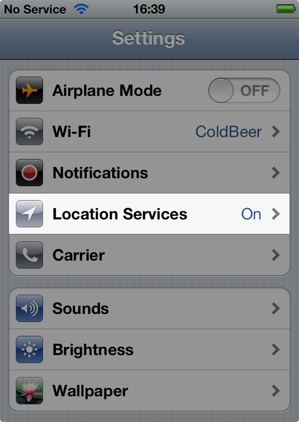
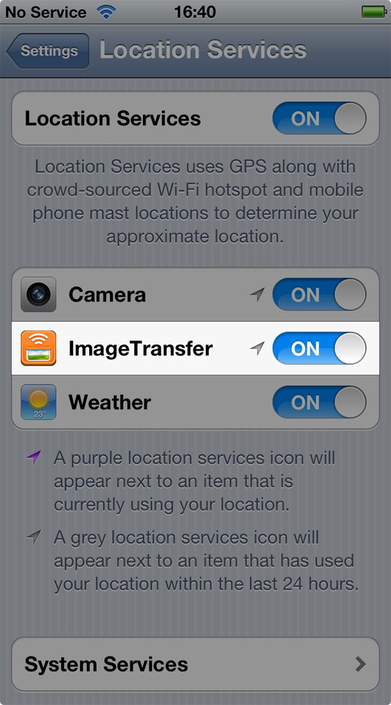

Enabling access
Please follow this guide to allow Image Transfer to read your photos:
Settings

Location Services
Image Transfer [ON]
1. Launch Settings app & select
Location Services

2. Make sure both Location Services and Image Transfer switches are turned ON.
